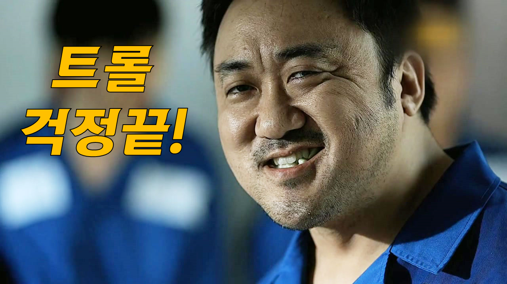

고려대학교 우지학

일상 속 불편함을 해결하는 플랫폼 서비스.
공학적, 디자인적 지식이 전무한 저는 창업을 생각할 때 자연스레 제품 개발보다는 플랫폼 서비스에 관심을 가지게 되었습니다. 특히, 우리 일상속에 있는 작은 불편함, 내가 직접 경험하고 느낀 불편함을 해결할 수 있는, 누구든지 쉽게 이용할 수 있는 플랫폼 서비스를 제공하고 싶습니다. 저는 LOL, 오버워치, 배틀그라운드와 같은 게임을 즐겨했습니다. 무작위로 팀원이 매칭되었을 때, 팀원과 마음이 맞지 않는 경우 스트레스를 많이 받았습니다. 또한 많은 게임 이용자들이 같은 문제로 게임을 올바로 즐기지 못한다는 문제를 느껴, 비슷한 성향, 원하는 유저와 팀을 이뤄 게임을 할 수 있는 플랫폼을 기획하였고, 2017년 Campus CEO Day 경진대회에서 우수상을 수상하였습니다.
공학적, 디자인적 지식이 전무한 저는 창업을 생각할 때 자연스레 제품 개발보다는 플랫폼 서비스에 관심을 가지게 되었습니다. 특히, 우리 일상속에 있는 작은 불편함, 내가 직접 경험하고 느낀 불편함을 해결할 수 있는, 누구든지 쉽게 이용할 수 있는 플랫폼 서비스를 제공하고 싶습니다. 저는 LOL, 오버워치, 배틀그라운드와 같은 게임을 즐겨했습니다. 무작위로 팀원이 매칭되었을 때, 팀원과 마음이 맞지 않는 경우 스트레스를 많이 받았습니다. 또한 많은 게임 이용자들이 같은 문제로 게임을 올바로 즐기지 못한다는 문제를 느껴, 비슷한 성향, 원하는 유저와 팀을 이뤄 게임을 할 수 있는 플랫폼을 기획하였고, 2017년 Campus CEO Day 경진대회에서 우수상을 수상하였습니다.